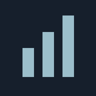

PRIVATE WORKSPACEstatistic.June
내 기기에 저장하는 개인 워크스페이스.
환경을 확인하고 있습니다.
첫 준비에는 인터넷 연결이 필요합니다.
아이패드에서 오프라인으로 사용하기
- Safari에서 이 주소를 한 번 엽니다.
- 첫 실행 자료가 모두 준비될 때까지 화면을 유지합니다.
- 공유 → 홈 화면에 추가를 선택합니다.
- 이후에는 홈 화면 아이콘으로 인터넷 없이 실행할 수 있습니다.
브라우저 데이터가 삭제되면 첫 실행 자료를 다시 준비합니다.
키보드 + 가로 화면 권장 · 데이터는 이 기기에 저장됩니다.